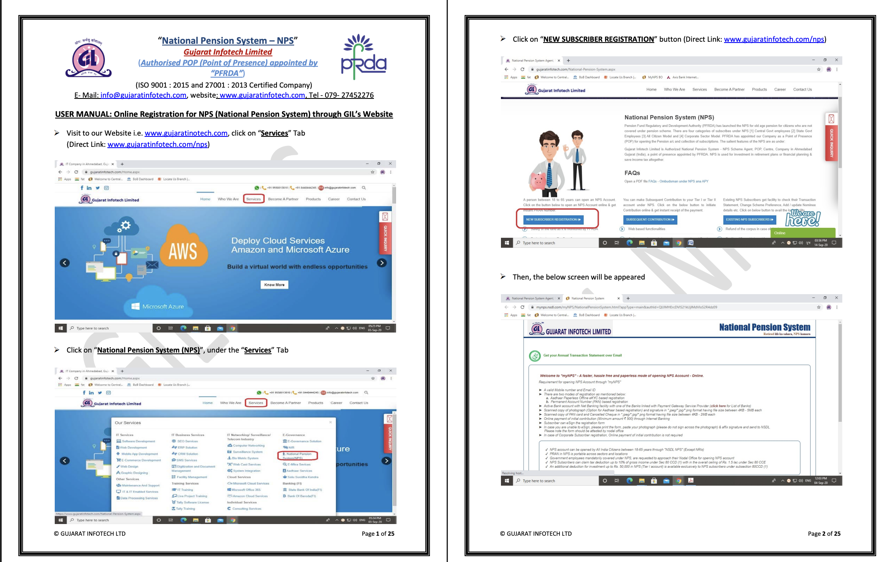
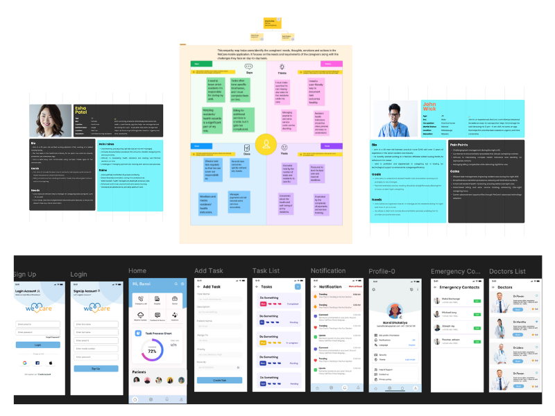
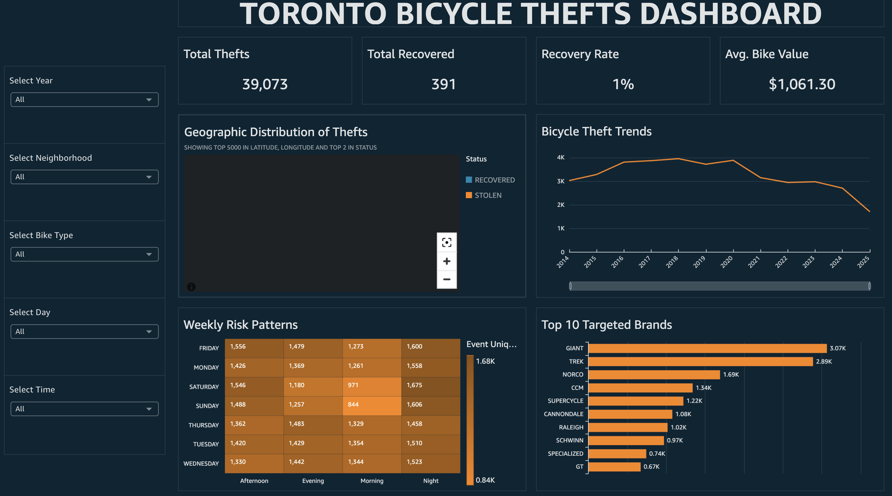
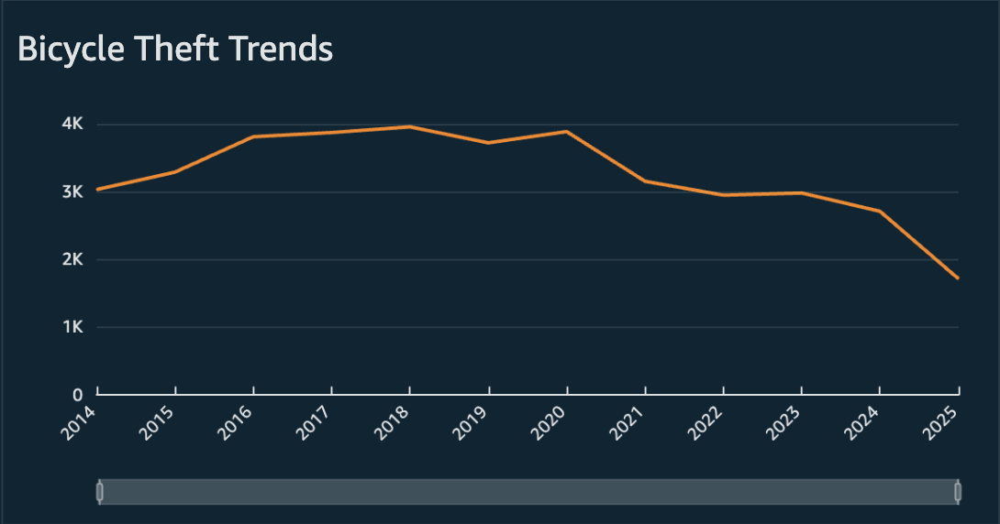
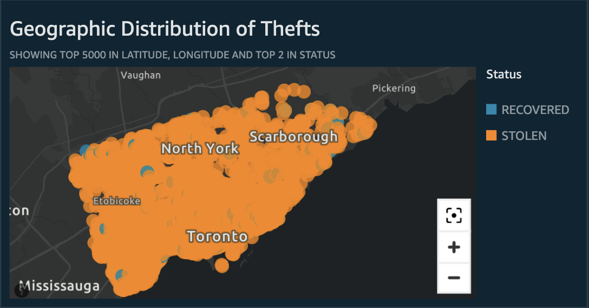
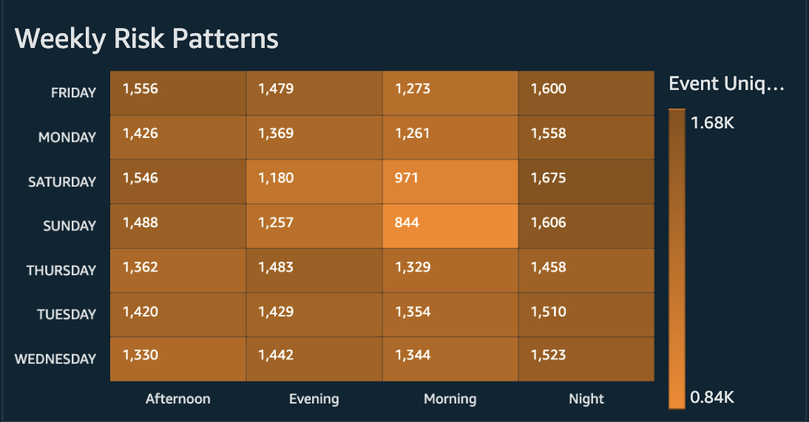
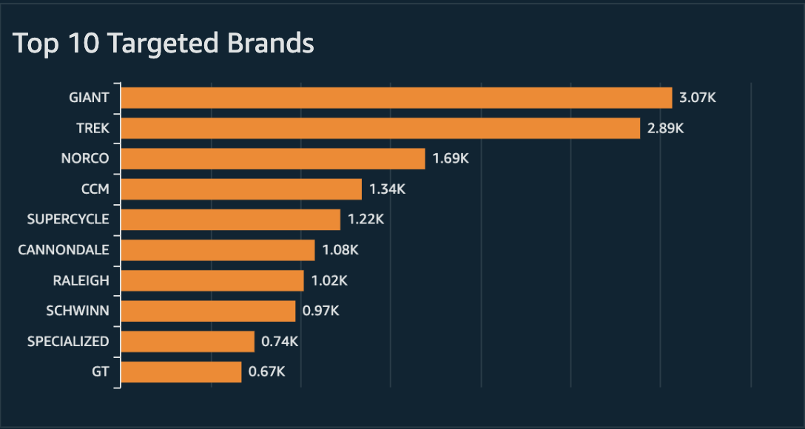
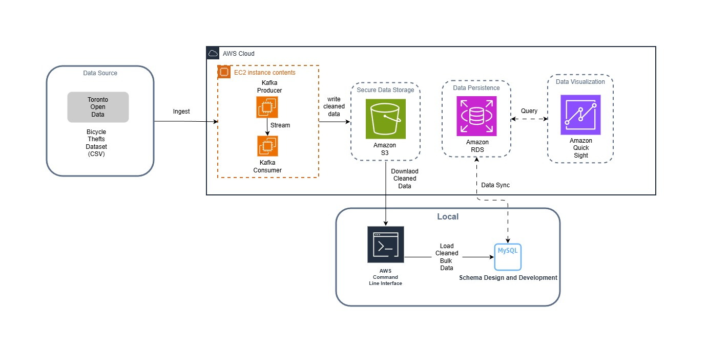

I am a Master's student in Information Systems at Northeastern University in Toronto, preparing for doctoral research on whether information systems actually serve the people who rely on them, and who they quietly leave behind.
My path runs through practice: user research for India's National Pension System with older users in mind, accessibility work on Canadian government websites, automation for a community non-profit, and IT work supporting a mixed workforce, including non-desk staff. Across all of it, I keep returning to the same gap: between a system that works on paper and one that works for the person in front of it.
Research & Projects
Automation · Community Non-profit
Payment Verification Automation: Community Family Services of Ontario
Challenge — Registrations and payments lived on two disconnected platforms, so staff matched them by hand and client confirmations took two to three days.
Approach — A team project at Northeastern: a Python pipeline (Flask, IMAP, regex parsing) that reads payment emails automatically, plus a reconciliation dashboard where a person reviews the edge cases.
Outcomes
- About 90% of payments now process automatically
- Confirmations go out in real time instead of days later
- Roughly 18 staff hours saved each week, at no added operating cost
Relevance — The cases automation can't handle, such as name mismatches and odd amounts, are exactly the people a system can miss. Designing for them is part of the work.
Human-Computer Interaction
National Pension System: Accessible Design for Older Users
Challenge — Older users navigating complex pension rules through a government registration system.
Approach — User research, use-case design and a registration user manual written for older users.

Fig. 1. Registration interface designed for older users.
Outcomes
- A step-by-step registration manual for older users
- Interface and use-case designs built around how older people actually register
- Clear documentation for complex regulatory processes
Relevance — Accessibility in public infrastructure, not just in a single app.
Human-Computer Interaction
WeCare: Elderly Care Mobile Application
Challenge — Designing mobile interfaces for elderly care that address complex caregiver workflows in skilled nursing facilities while prioritizing accessibility.
Approach — Flutter-based application built with empathy mapping, persona development, and iterative usability testing for caregiver task management.

Fig. 2. Caregiver task-prioritization interface.
Outcomes
- Accessibility-focused interfaces for elderly care contexts
- Human-centered design methodology applied from research through implementation
- Task-prioritization system addressing real caregiver workflow challenges
Relevance — An early example of designing for older users and their caregivers, the population at the centre of my accessibility interests.
Data Management & Engineering
Toronto Bicycle Thefts: End-to-End Data Pipeline & BI Dashboard
Challenge — Ten years of open municipal crime data (39,000+ records) needed to move from raw CSV to a live, explorable analytics layer usable by non-technical stakeholders.
My role — Led data modeling and SQL analysis on a 3-person team: designed the MySQL schema, wrote 15 analytical queries spanning temporal, geographic, attribute, and multi-dimensional analysis, and architected 6 pre-aggregated views plus a master table optimized for the BI layer. Teammates handled cloud infrastructure/ETL and the QuickSight dashboard build.

Fig. 3. Full dashboard: KPI cockpit, geographic map, trend line, weekly risk matrix, and brand targeting, unified through a single master table for cross-filtering.
Outcomes
- Schema and query design supporting sub-second dashboard performance across 39,000+ records
- Recovery rates under 2% in every police division; 53.85% of thefts concentrated at outdoor/street and apartment locations
- Master table architecture enabled global filtering without precomputing every possible aggregation

Fig. 4. Ten-year trend: peak in 2018, sustained decline since.

Fig. 5. Spatial concentration across Toronto neighbourhoods.

Fig. 6. Day × time-of-day risk matrix.

Fig. 7. Most frequently targeted bike brands.

Fig. 8. Pipeline architecture: Kafka/EC2 ingestion, S3 data lake, RDS MySQL analytics layer, QuickSight visualization.
Relevance — Public data only helps people if it can be explored by those who aren't data specialists; this project was about making that possible.
Information Retrieval · Open Source
Information Retrieval Reproductions
Reproduced documented retrieval baselines and submitted reproduction logs to the open-source Anserini and Pyserini toolkits.
Data Management & HCI · Course Project
BCMS: Human-Centered Airport Operations Database
Challenge — Airport operations with fragmented systems causing inefficiencies in baggage handling and catering services.
Approach — Integrated relational database with 15+ entities, real-time tracking, and user-centered design for diverse stakeholders.
Fig. 9. Entity relationship structure for baggage and catering management.
Full-Stack · Team Course Project
FlowCart: Supporting Female Entrepreneurs
Challenge — Delivery platform for female-driven small businesses addressing operational challenges.
Approach — JavaFX and MySQL with role-based interfaces and real-time tracking.